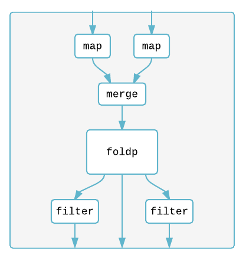
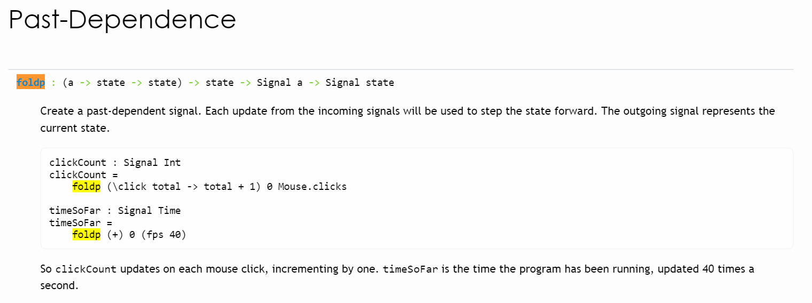

class: center, middle # An [Elm](http://elm-lang.org/) Teaser ##### CSNW Annual Meeting 2015 ##### Colorado Springs, CO [Presentation Source Repo](https://github.com/benracine/first-elm-talk-ever) <br> <br> .center[] --- # Disclaimer I am __not lobbying__ for the use of Elm at CSNW in this talk. I've done __close to zero research__ regarding its production readiness. I expect there are probably very important pieces missing from its ecosystem. <br> <br> But, I do think its design gives rise to interesting development patterns. --- # Disclaimer (cont.) I'm just trying to better myself as a developer. Developer responses over at [Hammer Principle](http://hammerprinciple.com/therighttool) suggest this is a good place to do that, as it appears as #1 on the following lists: - "Learning this language *significantly changed* how I use other languages." - "Learning this language *improved my ability* as a programmer." - "I would recommend most programmers learn this language, *regardless of whether they have a specific need for it*." - "This language is likely to have a strong influence on future languages." (**well, #2) - And the compliments [continue](http://hammerprinciple.com/therighttool/items/haskell). --- # My Path to Elm My thoughts bounce around in this space in response to two other talks: - You _might_ recall a talk by LC regarding his "long lost brother", [Bret Victor](http://worrydream.com/), and his inspiring ["Inventing on Principle"](https://vimeo.com/36579366) ideas. - A talk at OSCON by Jan Paul Posma about ["Visualizing Program Execution"](http://www.oscon.com/open-source-2015/public/schedule/detail/42069). Associated search term -> __"Omniscient Debugging"__. As I ruminate about the treatment of time, the [hot swapping of code](https://vimeo.com/86664303), maintainability, and ease of testing... I've felt a pull towards taking __immutable data__ and __pure stateless functions__ to their logical extremes. I see Elm as a useful tool for exploration in this direction. --- # The "Time Traveling Debugger" An interesting tool reminiscent of Bret Victor's interactive ideal. Purity and immutability and their role in <a href="http://debug.elm-lang.org/" target="_blank">its implementation</a>. A useful <a href="http://elm-lang.org/blog/time-travel-made-easy" target="_blank">blog entry</a>, but this is probably best exhibited by example... --- # Stamps <iframe width="750" height="450" src="https://www.youtube.com/embed/zybahE0aQqA" frameborder="0" allowfullscreen></iframe> <a href="http://debug.elm-lang.org/edit/Stamps.elm" target="_blank">Try it</a> --- # Numbers <iframe width="750" height="450" src="https://www.youtube.com/embed/Z9IRkGwlLlM" frameborder="0" allowfullscreen></iframe> <a href="http://debug.elm-lang.org/edit/NumbersOnly.elm" target="_blank">Try it</a> --- # Mario (skip) <iframe width="750" height="450" src="https://www.youtube.com/embed/RUeLd7T7Xi4" frameborder="0" allowfullscreen></iframe> <a href="http://debug.elm-lang.org/edit/Mario.elm" target="_blank">Try it</a> --- # TodoMVC (skip) <iframe width="750" height="450" src="https://youtube.com/embed/2HK4ENBPcWA" frameborder="0" allowfullscreen></iframe> <a href="" target="_blank"></a> --- # Tetris (skip) <iframe width="750" height="450" src="https://youtube.com/embed/IwOka_IXjU4" frameborder="0" allowfullscreen></iframe> <a href="" target="_blank"></a> --- # Show Me Some Code! [foldp](http://package.elm-lang.org/packages/elm-lang/core/2.1.0/Signal) ([simplest possible example](http://elm-lang.org/examples/mouse-clicks)) is (often) super central to understanding Elm code and appears in several examples: - [Adventure](http://elm-lang.org/examples/adventure): `Signal.foldp update hero input` - [Mario](http://elm-lang.org/examples/mario): `Signal.foldp update mario input` - [Pong](http://elm-lang.org/examples/pong): `Signal.foldp update defaultGame input` <br>  --- # Show Me Some Code! In the pong example, you will see: - A clean circular flow from Signals -> update -> Model -> view -> Signals -> update -> ... - The fact that Signals and the Model are data abstractions that interact with each with other via unidirectional stateless update and view functions. A lack of encapsulation is admittedly surprising, but it does make me ponder... is it better to have encapsulation and have to ripple truth throughout the system or to not, and to have one and only one location for truth? [Pong](http://elm-lang.org/examples/pong) is an example that I hope makes a reasonable [entry point](http://elm-lang.org/blog/making-pong). A [complete list](http://elm-lang.org/examples) of examples. --- # Lifelong Learning (time still?) I still have MUCH to learn, symmetries to understand, mental analogies to form, and dots to connect between the [FRP](https://en.wikipedia.org/wiki/Functional_reactive_programming) approach and the imperative event-driven approach. I don't think the MVC bits are (extremely) tricky to understand, but thinking in event-streams / [signals](http://package.elm-lang.org/packages/elm-lang/core/2.1.0/Signal) instead of individual events take some getting used to. I'm intrigued by a possible symbiotic relationship between learning these client-side techniques and in learning server-side concurrency models with some shared functional semantics. --- # An All-JavaScript System? (time still?) How feasible is an all-JavaScript system with similar features? - Pure stateless functions are possible now. - Tail-call optimization exists in ES6. - Does [immutable.js](https://github.com/facebook/immutable-js/) provide sufficient immutable data structures? - Could [bacon.js](https://baconjs.github.io) (or similar) provide sufficient signal abstractions? - Do the type abstractions map over? --- # TodoMVC (time still?) The [TodoMVC project](todomvc.com) is a popular means of comparing JavaScript UI frameworks. I'm happy to dive in if we have time, but I'm not **quite** grokking the whole Mailbox and address thing shown therein. The [Elm Code](https://github.com/evancz/elm-todomvc/blob/master/Todo.elm). [The Elm Demo](http://evancz.github.io/elm-todomvc/). .right[<img height="300" src="signal-graph-summary.png">] --- # Background Bits (skip) - Long story made really short... it's "kinda sorta" like [Haskell](haskell.org) in the browser. - It's a playground of sorts for exploring [FRP](https://en.wikipedia.org/wiki/Functional_reactive_programming) (Functional Reactive Programming) principles in the browser. - It kind of feels like [MVC "done right"](http://computationallyendowed.com/blog/2014/07/20/reactive-mvc.html), as it's the first system I've seen where it's super obvious that: - The __Model__ is a truly __logicless__ data type that describes the entire state of the application, all in one place. While bits of state may be strewn about the application, the model is the authoritative record of state. - The __View__ is just a function that maps a Model to a visual representation, e.g. __`View : Model -> Html`__ - The __Controller/Update__ is just a function that maps a Signal and a Model to a new Model, e.g. __`update: Action -> Model -> Model`__ --- # Almost Random (skip) There's an [elm-d3](https://github.com/seliopou/elm-d3) library out there. I created a really silly [little toy](github.com/benracine/functional-purity-toy), just to play around with what "functional purity" looks like in JavaScript. I ended up chaining together some tiny pure functions using `_.chain`, which isn't too unlike what happens in the update function in the adventure example.